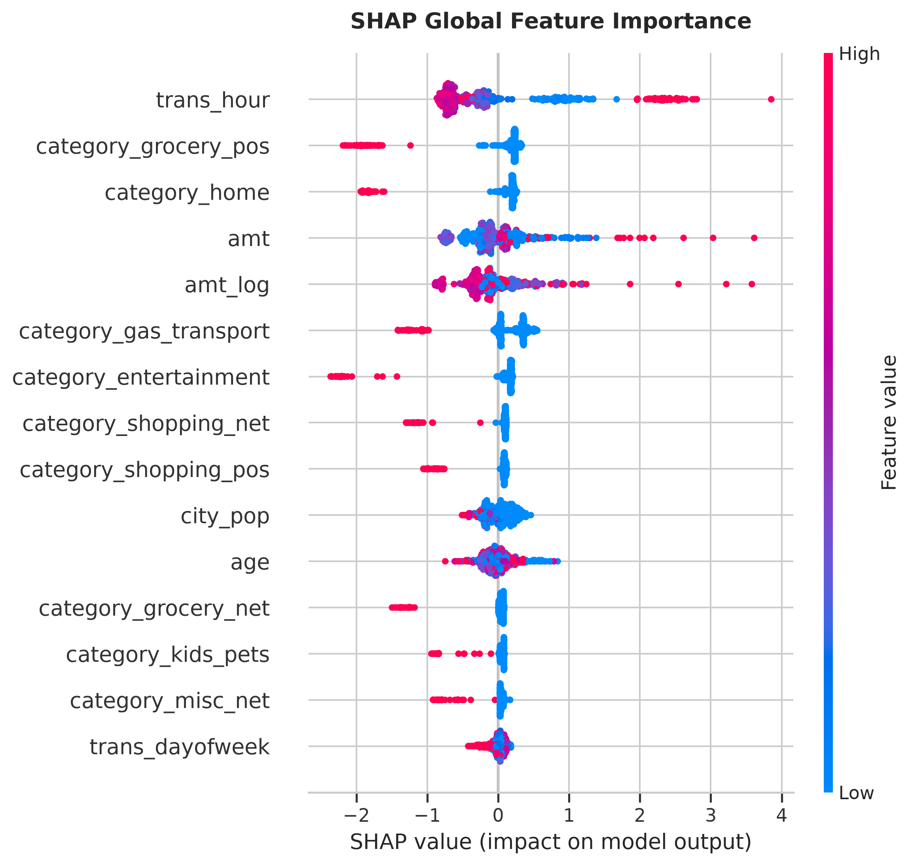
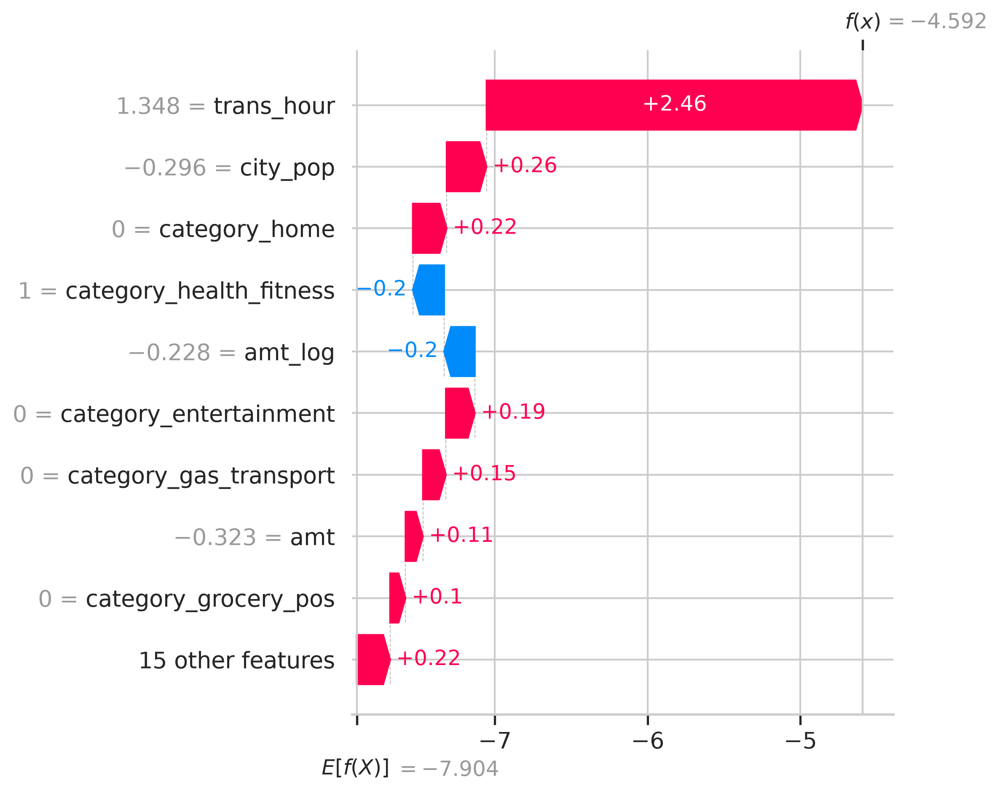

🔍 Explainable AI (XAI) & Regulatory Trust
Game-theoretic TreeSHAP feature attributions and contrastive local case study audits guarantee transparent credit and fraud decisions under ECOA/FCRA regulations.

Task A: Global Fraud Risk Drivers
Late transaction hours (23:00 - 04:00), anomalous amount ratios, and high-risk merchant categories (grocery_pos, home goods) strongly drive fraud risk probability.

Task B: Global Loan Default Drivers
Asset ownership (car & home ownership), professional experience tenure, and employment stability significantly lower default risk variance.
Contrastive Local Instance Audits
High-Risk Fraud Capture
A $380.00 purchase at 02:45 AM at a high-risk merchant category produced p = 0.892 (operating cutoff p* = 0.023). TreeSHAP confirms trans_hour (+0.42) and amt (+0.31) as principal causes.

Operational Travel Friction
A legitimate $410.00 airline booking at 23:15 PM scored p = 0.048. Flagged under p* = 0.023, but low spatial distance (4.2 km) compensated. Safely resolved via zero-friction SMS authentication.

Stealth Velocity Attack
A micro-fraud transaction of $28.50 during business daylight hours scored p = 0.012 (below p* = 0.023). Static tabular models fail on stealth mimicry; demonstrates the need for graph velocity tracking.
